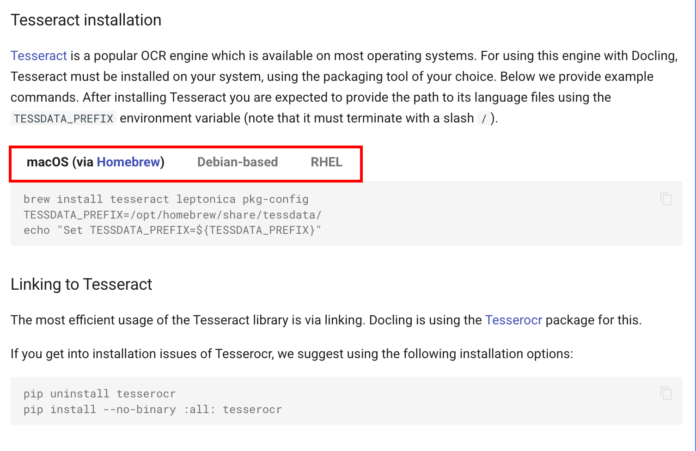

Customizing Conversion Pipeline
Docling provides sane defaults for converting many different type of documents. Many documents that you want to convert for LLM training or RAG will convert to a suitable format of your choice without too much customization. However, in some cases, you may wish to customize the Docling processing pipeline for conversion by using the Python library.
Common use-cases include using a different Optical Character Recognition (OCR) tool/library to convert a scanned PDF document, extract certain sections from documents while discrading the rest, automatic image captioning, image and table extraction, and many more options to programatically navigate the structure of the document hierarchy during the conversion process.
Docling allows you to do this by customizing the pipeline options classes provided by Docling. See Pipeline Options for more details.
Pre-requisites
-
The Docling Python library must be installed as outlined in the previous sections using
pipin a Python virtual environment -
Git CLI to clone the sample data files from GitHub
-
Visual Studio Code, or other editors to edit Python code
-
You will need to install the Tesseract OCR CLI and libraries
Lab: Customizing the Docling Conversion Pipeline
-
If you have not already done it, clone the Git repository containing the sample documents that should be converted, to a folder of your choice.
$ git clone https://github.com/RedHatQuickCourses/genai-apps.git -
All the sample input files and code is in a folder called
dataprep. Change to this folder in the terminal.$ cd genai-apps/dataprep -
If you have previously created a virtual environment and installed Docling, activate the venv.
$ source venv/bin/activateYour prompt should change to indicate that you are now running in an isolated virtual environment.
-
Install the Tesseract OCR CLI and libraries for your platform by following the instructions at Install Alternative OCR engines
Install the tesseract libraries using pip installonly after you activate the virtual environment!Figure 1. Install Tesseract OCRFor example, on macOS:
$ (venv) brew install tesseract leptonica pkg-config $ (venv) TESSDATA_PREFIX=/opt/homebrew/share/tessdata/ $ (venv) export "TESSDATA_PREFIX=${TESSDATA_PREFIX}" $ (venv) pip install --no-binary :all: tesserocr==2.8.0 -
Inspect the
custom-conversion.pyfile in VS Code. The input document is in thesample-data/customfolder. The output documents will be placed in the/tmp/custom-convertedfolder.INPUT_FILE = "sample-data/custom/doclaynet-paper.pdf" OUTPUT_DIR = "/tmp/custom-converted" -
Scroll all the way to the bottom of the file. This file contains three methods demonstrating a default pipeline run, and pipeline customizations. The customization methods are commented out initially.
... if __name__ == "__main__": convert_default() #convert_pypdfium_backend() #convert_tesseract_ocr() ... -
Inspect the
convert_default()method. It uses the default pipeline options with no customization.... pipeline_options = PdfPipelineOptions() doc_converter = DocumentConverter( format_options={ InputFormat.PDF: PdfFormatOption( pipeline_options=pipeline_options ) } ) ... -
Run the program. You can safely ignore any warnings emitted.
$ (venv) python3 custom-conversion.py -
Once the program completes, you should see the output Markdown file in the
/tmp/custom-convertedfolder. -
Next, inspect the
convert_pypdfium_backend()method. Note the customization by setting variouspipeline_optionsflags. Also note that we are using a different PDF conversion backend (PyPdfium) instead of the default PDF backend in Docling by taking advantage of Docling’s pluggable architecture.... pipeline_options = PdfPipelineOptions() pipeline_options.do_ocr = True pipeline_options.do_table_structure = True pipeline_options.table_structure_options.do_cell_matching = True pipeline_options.generate_picture_images = True doc_converter = DocumentConverter( format_options={ InputFormat.PDF: PdfFormatOption( pipeline_options=pipeline_options, backend=PyPdfiumDocumentBackend ) } ) ... -
Finally, inspect the
def convert_tesseract_ocr()method. We take advantage of the native Docling integration with the Tesseract OCR libraries and customize the pipeline to use it instead of the default OCR library in Docling (EasyOCR):... pipeline_options = PdfPipelineOptions() ... pipeline_options.ocr_options = TesseractCliOcrOptions( force_full_page_ocr=True) ... -
Before running the script, uncomment the two method calls at the bottom of the file as follows:
... if name == "main": convert_default() convert_pypdfium_backend() convert_tesseract_ocr() -
Run the script once again and verify the converted Markdown files in the
/tmp/custom-convertedfolder. Experiment with different types of scanned PDF files to see the difference between the output from the different OCR libraries and backends.